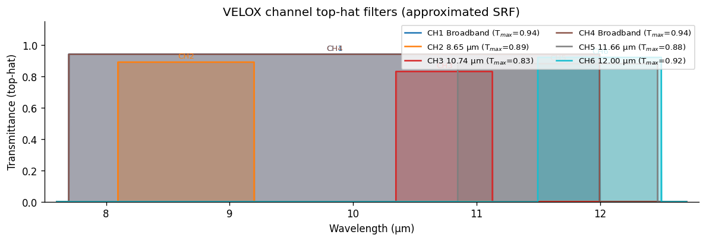
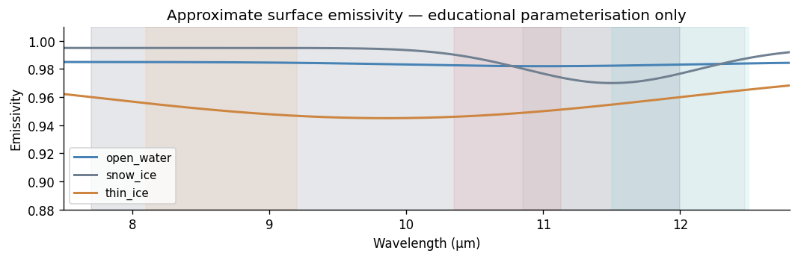
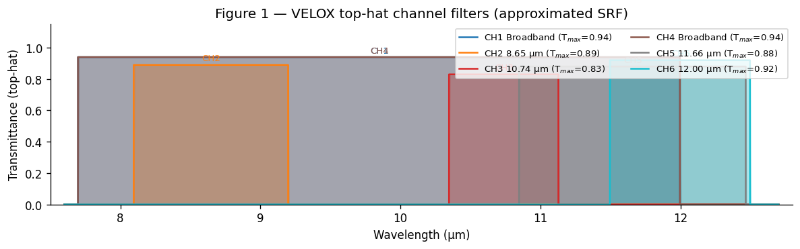
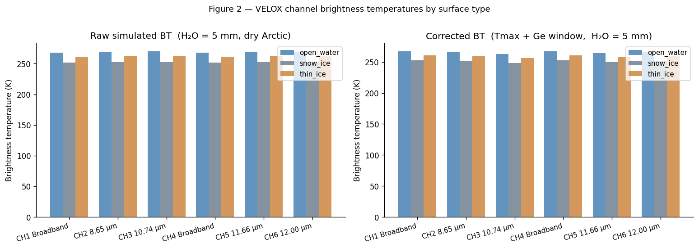
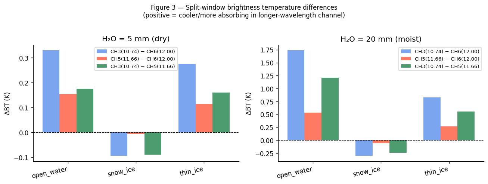
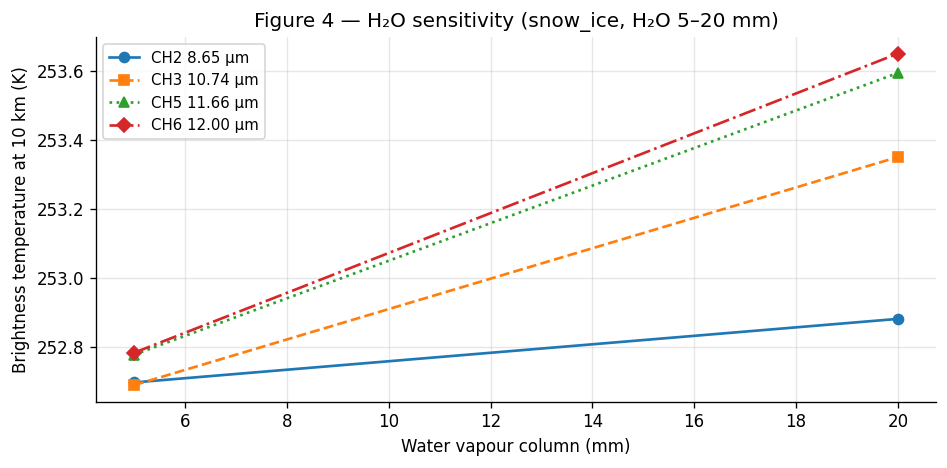
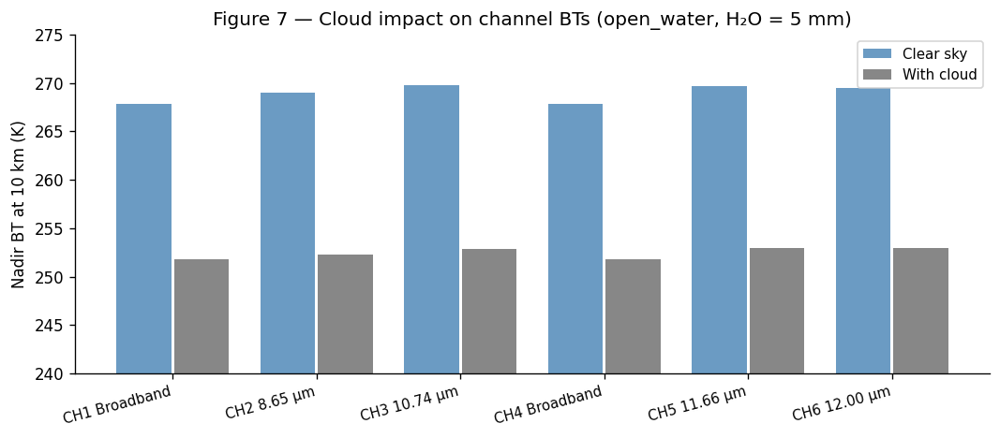

Realistic simulation of VELOX thermal infrared channels#
A first-order forward model for the six channels of the VELOX thermal infrared imager on the HALO research aircraft (Schäfer et al., 2022, Atmos. Meas. Tech., 15, 1491–1509, https://doi.org/10.5194/amt-15-1491-2022), for Arctic sea-ice scenes of the HALO-(AC)³ campaign. It shows how the channels respond to surface type, skin temperature, emissivity and water-vapour column, applies first-order instrument corrections (germanium window, channel Tmax, NEDT) and compares the result with broadband VELOX observations from RF04. The RF04 file is not public.
Warning
This is a first-order VELOX channel simulator, not a validated forward model. Spectral response functions are top-hat filters built from published wavelength bounds and peak transmissions, the surface emissivities are illustrative, and there is no calibration chain or retrieval.
1. Why simulate VELOX channels?#
A broadband thermal simulation (7.7–12.0 µm) gives one brightness temperature. VELOX observes the scene in six channels, and the channel differences carry independent information:
Channel pair |
Physical signal |
|---|---|
CH3 (10.74 µm) − CH6 (12.00 µm) |
Classic split-window: H₂O absorption, skin-T, emissivity |
CH5 (11.66 µm) − CH6 (12.00 µm) |
Narrower split-window |
Broadband − narrowband |
Atmospheric weighting function contrast |
CH2 (8.65 µm) vs window channels |
Cloud-top detection, cloud phase proxy |
import pyradtran # registers ds.pyradtran accessor
from pyradtran import Var
import matplotlib.pyplot as plt
import matplotlib.patches as mpatches
import numpy as np
import xarray as xr
from pathlib import Path
import pandas as pd
import logging
import warnings
logging.getLogger('pyradtran').setLevel(logging.CRITICAL)
plt.rcParams.update({
'figure.dpi': 120,
'axes.spines.top': False,
'axes.spines.right': False,
})
print("pyradtran imported successfully.")
pyradtran imported successfully.
2. Instrument model#
VELOX (Video airbornE Longwave Observations within siX channels) looks at nadir from HALO (Gulfstream G-550, typical survey altitude 8–12 km).
Sensor format: 640 × 512 px (post-processing uses 635 × 507 px for cross-filter comparability)
Field of view: 35.5° × 28.7°
Thermal range: 7.7–12.0 µm
The cells below define the six filters, with spectral response functions (SRFs) approximated as top-hat filters. Replace load_srf_or_tophat() to use measured SRF files.
def make_velox_channels():
"""Return a DataFrame with VELOX channel definitions.
Wavelength bounds are derived from Schäfer et al. (2022) Table 1
(centre ± half-width). SRFs are *approximated* as top-hat filters;
replace with measured SRF data when available.
Returns
-------
pd.DataFrame
Columns: channel, wl_min [nm], wl_max [nm], center_um, halfwidth_um,
Tmax, label, ch_type.
"""
rows = [
# ch wl_min wl_max center hw Tmax label type
(1, 7700, 12000, None, None, 0.94, "CH1 Broadband", "broadband"),
(2, 8100, 9200, 8.65, 0.55, 0.89, "CH2 8.65 µm", "narrowband"),
(3, 10350, 11130, 10.74, 0.39, 0.83, "CH3 10.74 µm", "narrowband"),
(4, 7700, 12000, None, None, 0.94, "CH4 Broadband", "broadband"),
(5, 10850, 12470, 11.66, 0.81, 0.88, "CH5 11.66 µm", "narrowband"),
(6, 11500, 12500, 12.00, 0.50, 0.92, "CH6 12.00 µm", "narrowband"),
]
cols = ["channel", "wl_min", "wl_max", "center_um", "halfwidth_um",
"Tmax", "label", "ch_type"]
df = pd.DataFrame(rows, columns=cols)
# Fill broadband centre as midpoint for reference only
mask = df["center_um"].isna()
df.loc[mask, "center_um"] = (df.loc[mask, "wl_min"] + df.loc[mask, "wl_max"]) / 2e3
return df
channels = make_velox_channels()
print(channels[["channel", "wl_min", "wl_max", "center_um", "Tmax", "label"]].to_string(index=False))
channel wl_min wl_max center_um Tmax label
1 7700 12000 9.85 0.94 CH1 Broadband
2 8100 9200 8.65 0.89 CH2 8.65 µm
3 10350 11130 10.74 0.83 CH3 10.74 µm
4 7700 12000 9.85 0.94 CH4 Broadband
5 10850 12470 11.66 0.88 CH5 11.66 µm
6 11500 12500 12.00 0.92 CH6 12.00 µm
def plot_channel_response(channels_df, ax=None):
"""Plot top-hat channel response functions for all VELOX channels."""
if ax is None:
fig, ax = plt.subplots(figsize=(10, 3.5))
else:
fig = ax.get_figure()
colors = plt.cm.tab10(np.linspace(0, 0.9, len(channels_df)))
wl_grid = np.linspace(7600, 12700, 1000) # nm
for (_, ch), color in zip(channels_df.iterrows(), colors):
response = np.where(
(wl_grid >= ch["wl_min"]) & (wl_grid <= ch["wl_max"]),
ch["Tmax"], 0.0
)
ax.fill_between(wl_grid / 1e3, 0, response, alpha=0.35, color=color)
ax.step(wl_grid / 1e3, response, color=color, lw=1.5,
label=f"{ch['label']} (T$_{{max}}$={ch['Tmax']:.2f})")
# Annotate centre wavelength
cx = ch["center_um"]
ax.text(cx, ch["Tmax"] + 0.015, f"CH{int(ch['channel'])}",
ha="center", va="bottom", fontsize=8, color=color)
ax.set_xlabel("Wavelength (µm)")
ax.set_ylabel("Transmittance (top-hat)")
ax.set_xlim(7.5, 12.8)
ax.set_ylim(0, 1.15)
ax.legend(fontsize=8, ncol=2, loc="upper right")
ax.set_title("VELOX channel top-hat filters (approximated SRF)")
fig.tight_layout()
return fig, ax
fig_ch, _ = plot_channel_response(channels)
plt.show()

def load_srf_or_tophat(channel_row, wl_grid_nm):
"""Return normalised SRF for a VELOX channel on *wl_grid_nm*.
Currently returns a top-hat based on the published wavelength range
and Tmax. **Replace this function** to load measured SRF curves from
a CSV file (columns: wavelength_nm, transmittance) when available.
Parameters
----------
channel_row : pd.Series
One row from make_velox_channels().
wl_grid_nm : array-like
Wavelength grid in nm.
Returns
-------
np.ndarray
Normalised SRF (0-1) on wl_grid_nm.
Example for real SRF
--------------------
# srf_df = pd.read_csv(f'srf_ch{int(channel_row.channel)}.csv')
# return np.interp(wl_grid_nm, srf_df['wavelength_nm'], srf_df['transmittance'],
# left=0, right=0)
"""
wl = np.asarray(wl_grid_nm)
return np.where(
(wl >= channel_row["wl_min"]) & (wl <= channel_row["wl_max"]),
channel_row["Tmax"], 0.0
)
3. Scene definition: Arctic sea-ice case (HALO-AC³ RF04 context)#
The scene is loosely based on HALO-(AC)³ research flight 04 (2022-03-14), a transit and survey flight over the Svalbard sea-ice region.
Atmosphere: AFGL subarctic winter profile (afglsw), with the water-vapour column set by mol_modify H2O. A US standard atmosphere (288 K at the surface) would put warm, moist air above a 253 K surface and make the channels warmer than the surface. For realistic profiles use ERA5 or radiosonde data (Atmosphere & ERA5).
Surface types (all approximate):
Type |
Skin temp |
Emissivity |
Note |
|---|---|---|---|
Open water / lead |
271.35 K |
0.98 |
Near freezing point of saline water |
Snow-covered sea ice |
253 K |
0.99 |
Cold Arctic sea ice |
Thin/bare ice |
265 K |
0.95 |
Transitional, more variable emissivity |
These emissivities are rough values. VELOX retrievals need spectrally resolved emissivity spectra (e.g. from laboratory databases or the ASTER spectral library).
# ── Scene constants ────────────────────────────────────────────────────────────
LAT = 78.9 # °N — Svalbard / Fram Strait
LON = 12.4 # °E
BASE_TIME = "2022-03-14T12:00:00"
ALT_KM = 10.0 # aircraft altitude (km)
H2O_DRY_MM = 5.0 # precipitable water, dry Arctic (mm)
H2O_MOIST_MM= 20.0 # moist Arctic case
# ── Surface type definitions ───────────────────────────────────────────────────
# emissivity: approximate spectrally flat value (Kirchhoff: albedo = 1 - emissivity)
SURFACE_TYPES = {
"open_water": {"T_sfc": 271.35, "emissivity": 0.98},
"snow_ice": {"T_sfc": 253.15, "emissivity": 0.99},
"thin_ice": {"T_sfc": 265.00, "emissivity": 0.95},
}
print("Surface types:")
for name, props in SURFACE_TYPES.items():
print(f" {name:16s} T_sfc={props['T_sfc']:.2f} K "
f"ε={props['emissivity']:.2f} albedo={1-props['emissivity']:.2f}")
Surface types:
open_water T_sfc=271.35 K ε=0.98 albedo=0.02
snow_ice T_sfc=253.15 K ε=0.99 albedo=0.01
thin_ice T_sfc=265.00 K ε=0.95 albedo=0.05
def make_surface_emissivity(surface_type_name, wl_um=None):
"""Return approximate spectrally flat emissivity for a surface type.
This is an educational simplification. In reality:
- Snow emissivity drops near 11–12 µm (ε ≈ 0.97–0.99)
- Seawater emissivity is ~0.98–0.99 across 8–13 µm
- Bare ice can be significantly lower and more spectrally variable
Replace this function or the SURFACE_TYPES dict with spectrally resolved
values from the ASTER spectral library, Salisbury & D'Aria (1994), or
in-situ measurements when available.
Parameters
----------
surface_type_name : str
Key in SURFACE_TYPES dict.
wl_um : array-like, optional
Wavelength grid (µm). Ignored for flat emissivity; kept as hook.
Returns
-------
float
Emissivity (0–1).
"""
return SURFACE_TYPES[surface_type_name]["emissivity"]
def load_surface_emissivity_csv(path, wl_um):
"""Load spectral emissivity from a two-column CSV file.
**Stub** — not yet implemented. Replace the body with:
>>> df = pd.read_csv(path)
>>> return np.interp(wl_um, df['wavelength_um'], df['emissivity'],
... left=df['emissivity'].iloc[0],
... right=df['emissivity'].iloc[-1])
Parameters
----------
path : str or Path
CSV file with columns 'wavelength_um' and 'emissivity'.
wl_um : array-like
Target wavelength grid in µm.
"""
raise NotImplementedError(
f"Implement load_surface_emissivity_csv to read {path} "
"and interpolate to wl_um."
)
fig_em, ax_em = plt.subplots(figsize=(9, 3))
# Approximate spectral profiles for illustration
wl_plot = np.linspace(7.5, 12.8, 500) # µm
# These are illustrative piecewise functions — NOT real measured spectra
def _eps_water(wl):
return np.clip(0.985 - 0.003 * np.exp(-((wl - 11.0)**2) / 2), 0.96, 1.0)
def _eps_snow(wl):
drop = np.exp(-((wl - 11.5)**2) / 0.8)
return np.clip(0.995 - 0.025 * drop, 0.965, 1.0)
def _eps_thin_ice(wl):
return np.clip(0.96 - 0.015 * np.sin(np.pi * (wl - 7.7) / 4.3), 0.90, 0.97)
profiles = {
"open_water": (_eps_water, "steelblue"),
"snow_ice": (_eps_snow, "slategray"),
"thin_ice": (_eps_thin_ice, "peru"),
}
for name, (fn, col) in profiles.items():
ax_em.plot(wl_plot, fn(wl_plot), color=col, lw=1.8, label=name)
# Shade VELOX bands for reference
ch_colors = plt.cm.tab10(np.linspace(0, 0.9, len(channels)))
for (_, ch), col in zip(channels.iterrows(), ch_colors):
ax_em.axvspan(ch["wl_min"]/1e3, ch["wl_max"]/1e3, alpha=0.08, color=col)
ax_em.set_xlabel("Wavelength (µm)")
ax_em.set_ylabel("Emissivity")
ax_em.set_xlim(7.5, 12.8)
ax_em.set_ylim(0.88, 1.01)
ax_em.legend(fontsize=9)
ax_em.set_title("Approximate surface emissivity — educational parameterisation only")
fig_em.tight_layout()
plt.show()

4. Radiative transfer setup#
Each channel is one uvspec run integrated over its top-hat wavelength window:
source thermalandoutput_process integrate: band-integrated signaluuwithumu 1: upwelling radiance seen by a nadir-looking sensor (what VELOX measures), next to the hemispheric irradianceeupoutput_quantity brightness: band-integrated radiance converted to brightness temperature in kelvin (Results & Post-Processing)reptran medium: molecular absorption at moderate resolutionper-channel wavelength range via
params={'wavelength': 'wl_min wl_max'}surface emissivity entered as
albedo = 1 − ε
run_velox_channel_scene loops over the six channels and returns one dataset with dimensions (channel, surface_type, altitude). Because the filters are top-hats, the band-integrated brightness temperature does not depend on \(T_{\max}\).
# ── Config ─────────────────────────────────────────────────────────────────────
CONFIG_PATH = Path("config/velox_realistic.yaml")
assert CONFIG_PATH.exists(), f"Config not found: {CONFIG_PATH.resolve()}"
# Set RUN_EXPENSIVE = True to run the full H₂O sweep (8 values).
# The default run is: 6 channels × 3 surface types × 2 H₂O values = 36 simulations.
RUN_EXPENSIVE = False
def run_velox_channel_scene(
channels_df,
surface_types,
config_path,
h2o_mm=5.0,
aircraft_altitude_km=10.0,
lat=LAT,
lon=LON,
base_time=BASE_TIME,
mol_abs_param=None,
extra_params=None,
):
"""Run a per-channel VELOX forward simulation over multiple surface types.
For each VELOX channel the wavelength range is overridden at runtime via
``params={'wavelength': 'wl_min wl_max'}``. All other
settings come from *config_path* (velox_realistic.yaml).
Parameters
----------
channels_df : pd.DataFrame
VELOX channel table from ``make_velox_channels()``.
surface_types : dict
``{name: {'T_sfc': float, 'emissivity': float}}``.
config_path : Path
YAML config file path.
h2o_mm : float
Precipitable water column in mm (``mol_modify H2O``).
aircraft_altitude_km : float
Output altitude (zout) in km — corresponds to aircraft level.
lat, lon : float
Scene location (°N, °E).
base_time : str
ISO-format UTC timestamp.
mol_abs_param : str, optional
Override ``mol_abs_param`` (e.g. 'reptran coarse' for speed).
extra_params : dict, optional
Further ``params`` entries, e.g. a cloud (``wc_file``).
Returns
-------
xr.Dataset
Dimensions ``(channel, surface_type, altitude)``.
Key variable: ``uu`` — nadir brightness temperature in K.
"""
stype_names = list(surface_types.keys())
T_sfcs = [surface_types[s]["T_sfc"] for s in stype_names]
albedos = [1.0 - surface_types[s]["emissivity"] for s in stype_names]
# One time step per surface type so (T_sfc, albedo) pairs are preserved
times = pd.date_range(base_time, periods=len(stype_names), freq="s")
ds_input = xr.Dataset(
coords={
"time": times,
"latitude": ("time", [lat] * len(stype_names)),
"longitude": ("time", [lon] * len(stype_names)),
"altitude": ("altitude", [aircraft_altitude_km]),
},
data_vars={
"surface_temperature": ("time", T_sfcs),
"albedo": ("time", albedos),
},
)
# Build base overrides
base_overrides = {
"output_quantity": "brightness",
"mol_modify H2O": float(h2o_mm), # mm
}
if mol_abs_param is not None:
base_overrides["mol_abs_param"] = mol_abs_param
base_overrides.update(extra_params or {})
channel_results = []
for _, ch in channels_df.iterrows():
overrides = {**base_overrides,
"wavelength": f"{int(ch['wl_min'])} {int(ch['wl_max'])}"}
ds_ch = ds_input.pyradtran.run(
config_path=config_path,
return_dataset=True,
save_to_file=False,
params={'sur_temperature': Var('surface_temperature'), 'albedo': Var('albedo'), **overrides},
show_progress=False,
)
# Label the time dimension with surface type names
ds_ch = ds_ch.assign_coords(time=stype_names).rename({"time": "surface_type"})
channel_results.append(ds_ch)
ds_all = xr.concat(channel_results, dim="channel")
ds_all = ds_all.assign_coords(channel=channels_df["channel"].values)
# Attach channel metadata as coordinate
ds_all = ds_all.assign_coords(
channel_label=("channel", channels_df["label"].values),
Tmax=("channel", channels_df["Tmax"].values),
wl_min_nm=("channel", channels_df["wl_min"].values),
wl_max_nm=("channel", channels_df["wl_max"].values),
)
ds_all.attrs.update({
"h2o_mm": h2o_mm,
"aircraft_alt_km": aircraft_altitude_km,
"lat": lat, "lon": lon,
"srf_type": "top-hat (band limits only; Tmax not applied)",
})
return ds_all
# ── Default run: dry Arctic atmosphere (H₂O = 5 mm) ──────────────────────────
print("Running 6 channels × 3 surface types (dry Arctic, H₂O = 5 mm)...")
ds_dry = run_velox_channel_scene(
channels, SURFACE_TYPES, CONFIG_PATH, h2o_mm=H2O_DRY_MM
)
# ── Moist Arctic (H₂O = 20 mm) for split-window sensitivity ──────────────────
print("Running 6 channels × 3 surface types (moist Arctic, H₂O = 20 mm)...")
ds_moist = run_velox_channel_scene(
channels, SURFACE_TYPES, CONFIG_PATH, h2o_mm=H2O_MOIST_MM
)
print("Done.")
Running 6 channels × 3 surface types (dry Arctic, H₂O = 5 mm)...
Running 6 channels × 3 surface types (moist Arctic, H₂O = 20 mm)...
Done.
# uu: nadir brightness temperature at aircraft altitude (eup: hemispheric)
# Dimensions: (channel=6, surface_type=3, altitude=1)
print("=== Dry Arctic simulation dataset ===")
print(ds_dry)
print()
print("Nadir BT (uu, K) at aircraft altitude, dry Arctic:")
print(ds_dry.uu.isel(altitude=0).to_pandas())
=== Dry Arctic simulation dataset ===
<xarray.Dataset> Size: 944B
Dimensions: (channel: 6, surface_type: 3, altitude: 1)
Coordinates:
* altitude (altitude) float64 8B 10.0
* surface_type (surface_type) <U10 120B 'open_water' 'snow_ice' 'thin_ice'
* channel (channel) int64 48B 1 2 3 4 5 6
channel_label (channel) object 48B 'CH1 Broadband' ... 'CH6 12.00 µm'
Tmax (channel) float64 48B 0.94 0.89 0.83 0.94 0.88 0.92
wl_min_nm (channel) int64 48B 7700 8100 10350 7700 10850 11500
wl_max_nm (channel) int64 48B 12000 9200 11130 12000 12470 12500
Data variables:
eup (channel, surface_type, altitude) float64 144B 266.7 ... 2...
edn (channel, surface_type, altitude) float64 144B 160.3 ... 9...
uu (channel, surface_type, altitude) float64 144B 267.9 ... 2...
status (channel, surface_type) int64 144B 0 0 0 0 0 0 ... 0 0 0 0 0
Attributes: (12/13)
generated_by: pyradtran
generation_date: 2026-11-14T14:17:54.478899
pyradtran_version: 0.2.0
history: 2026-11-14T14:17:54: pyradtran 0.2.0 ds.pyradt...
pyradtran_params: {"sur_temperature": "Var(name='surface_tempera...
pyradtran_libradtran_bin: /opt/libRadtran-2.0.6/bin/uvspec
... ...
pyradtran_input_example: rte_solver disort ...
h2o_mm: 5.0
aircraft_alt_km: 10.0
lat: 78.9
lon: 12.4
srf_type: top-hat (band limits only; Tmax not applied)
Nadir BT (uu, K) at aircraft altitude, dry Arctic:
surface_type open_water snow_ice thin_ice
channel
1 267.857391 251.965973 260.953918
2 268.983978 252.696777 262.056213
3 269.812500 252.689102 262.189972
4 267.857391 251.965973 260.953918
5 269.636932 252.777451 262.029449
6 269.482025 252.783081 261.915375
5. Instrument effects#
The simulation gives the scene brightness temperature. The raw signal of the camera also contains the filter and window effects below. A blackbody calibration through the same optics removes them, so calibrated VELOX brightness temperatures are compared with the uncorrected simulation (section 7). The corrected values show how large the effects are that the calibration has to remove.
5a. Filter peak transmittance#
A real filter transmits only \(T_{\max} < 1\) of the scene radiance: $\(L_{\mathrm{eff}} = T_{\max} \cdot L_{\mathrm{scene}} + (1 - T_{\max}) \cdot L_{\mathrm{self}}\)\( where \)L_{\mathrm{self}}$ is the self-emission of the filter, negligible for a cold filter (80 K assumed here). The code evaluates Planck’s law at the channel centre, which is rough for the broadband channels.
5b. Germanium window#
VELOX looks through a germanium window with transmittance \(\tau_{\mathrm{win}} \approx 0.9395\): $\(L_{\mathrm{meas}} = \tau_{\mathrm{win}} \cdot L_{\mathrm{scene}} + (1 - \tau_{\mathrm{win}}) \cdot B(\lambda_{\mathrm{eff}}, T_{\mathrm{win}})\)\( \)T_{\mathrm{win}}\( is the physical temperature of the window (293 K assumed), so the window adds a warm offset. \)\tau_{\mathrm{win}}$ depends on wavelength; a single constant is used here.
5c. NEDT noise#
add_nedt_noise adds Gaussian noise with an assumed NEDT of 0.04 K.
# Physical constants
_h = 6.62607015e-34 # J s
_c = 2.99792458e8 # m/s
_kb = 1.380649e-23 # J/K
def planck_radiance(T_K, wl_um):
"""Spectral radiance [W m⁻² sr⁻¹ µm⁻¹] from Planck's law.
Parameters
----------
T_K : float or array
Temperature in Kelvin.
wl_um : float or array
Wavelength in µm.
"""
wl_m = np.asarray(wl_um) * 1e-6
T = np.asarray(T_K)
exponent = (_h * _c) / (wl_m * _kb * T)
return (2 * _h * _c**2 / wl_m**5) / (np.exp(exponent) - 1) * 1e-6 # µm⁻¹
def brightness_temperature(L_wm2sr_um, wl_um):
"""Invert Planck's law: radiance [W m⁻² sr⁻¹ µm⁻¹] → brightness temperature [K]."""
wl_m = np.asarray(wl_um) * 1e-6
L = np.asarray(L_wm2sr_um)
return (_h * _c) / (wl_m * _kb * np.log(1 + (2 * _h * _c**2) / (wl_m**5 * L * 1e6)))
TAU_WINDOW = 0.9395 # Germanium window transmittance (constant, first-order)
T_WINDOW_K = 293.15 # Window physical temperature (cabin ~20°C)
NEDT_K = 0.04 # Noise-equivalent temperature difference (K)
def apply_window_correction(BT_K, wl_eff_um, tau=TAU_WINDOW, T_win=T_WINDOW_K):
"""Apply the germanium window transmission to a scene BT (raw-signal effect).
Works in radiance space at the channel's effective wavelength.
Lmeas = tau * L_scene + (1-tau) * B(wl_eff, T_win)
BT_corrected = B_inv(Lmeas, wl_eff)
Parameters
----------
BT_K : float or array
Scene brightness temperature before window (K).
wl_eff_um : float
Channel effective wavelength (µm).
tau : float
Window transmittance.
T_win : float
Window physical temperature (K).
Returns
-------
np.ndarray
Corrected brightness temperature (K).
Warnings
--------
tau is wavelength-independent here — a first-order approximation only.
"""
L_scene = planck_radiance(BT_K, wl_eff_um)
L_win = planck_radiance(T_win, wl_eff_um)
L_meas = tau * L_scene + (1 - tau) * L_win
return brightness_temperature(L_meas, wl_eff_um)
def apply_tmax_correction(BT_K, Tmax, wl_eff_um, T_filter_K=80.0):
"""Apply the peak filter transmittance to a scene BT (raw-signal effect).
Leff = Tmax * L_scene + (1-Tmax) * B(wl_eff, T_filter)
For a cold filter (T_filter ≈ 80 K) the self-emission term is
negligible; for a warm filter use its actual temperature.
Warnings
--------
Linearisation is approximate, especially for broadband channels.
"""
L_scene = planck_radiance(BT_K, wl_eff_um)
L_self = planck_radiance(T_filter_K, wl_eff_um)
L_eff = Tmax * L_scene + (1 - Tmax) * L_self
return brightness_temperature(L_eff, wl_eff_um)
def add_nedt_noise(BT_K, nedt_k=NEDT_K, seed=42):
"""Add Gaussian NEDT noise to a brightness temperature array."""
rng = np.random.default_rng(seed)
return np.asarray(BT_K) + rng.normal(0.0, nedt_k, size=np.asarray(BT_K).shape)
# ── Apply all corrections to the dry-Arctic run ───────────────────────────────
BT_raw = ds_dry.uu.isel(altitude=0).values # shape (channel, surface_type)
BT_corrected = np.empty_like(BT_raw)
for i, (_, ch) in enumerate(channels.iterrows()):
wl_eff = ch["center_um"]
bt = BT_raw[i]
bt = apply_tmax_correction(bt, ch["Tmax"], wl_eff)
bt = apply_window_correction(bt, wl_eff)
BT_corrected[i] = bt
# Build a corrected xarray DataArray
BT_corrected_da = xr.DataArray(
BT_corrected,
dims=["channel", "surface_type"],
coords={
"channel": ds_dry.channel.values,
"surface_type": ds_dry.surface_type.values,
"channel_label": ("channel", ds_dry.channel_label.values),
},
attrs={"units": "K", "description": "Tmax + Ge-window corrected BT"},
)
# Delta BT due to corrections
delta_BT = BT_corrected - BT_raw
print("Raw-signal effect of filter + window (effective − scene BT) in K:")
print(pd.DataFrame(delta_BT.round(3),
index=channels["label"],
columns=list(SURFACE_TYPES.keys())))
Raw-signal effect of filter + window (effective − scene BT) in K:
open_water snow_ice thin_ice
label
CH1 Broadband -0.973 0.872 -0.216
CH2 8.65 µm -2.795 -0.519 -1.885
CH3 10.74 µm -7.319 -4.586 -6.143
CH4 Broadband -0.973 0.872 -0.216
CH5 11.66 µm -5.116 -2.814 -4.110
CH6 12.00 µm -2.948 -0.980 -2.088
6. Diagnostics and plots#
# ── Figure 1: Channel response (already shown above, reproduced for reference) ─
fig1, ax1 = plt.subplots(figsize=(10, 3.2))
plot_channel_response(channels, ax=ax1)
ax1.set_title("Figure 1 — VELOX top-hat channel filters (approximated SRF)")
plt.tight_layout()
plt.show()

# ── Figure 2: Brightness temperature per channel and surface type ──────────────
fig2, axes2 = plt.subplots(1, 2, figsize=(13, 4.5), sharey=False)
ch_labels = channels["label"].tolist()
stype_labels = list(SURFACE_TYPES.keys())
x = np.arange(len(ch_labels))
width = 0.26
stype_colors = {"open_water": "steelblue", "snow_ice": "slategray", "thin_ice": "peru"}
# Left panel: raw (libRadtran BT)
ax = axes2[0]
for j, stype in enumerate(stype_labels):
vals = ds_dry.uu.isel(altitude=0).sel(surface_type=stype).values
ax.bar(x + (j - 1) * width, vals, width, label=stype,
color=stype_colors[stype], alpha=0.85)
ax.set_xticks(x); ax.set_xticklabels(ch_labels, rotation=15, ha="right", fontsize=9)
ax.set_ylabel("Brightness temperature (K)")
ax.set_title("Raw simulated BT (H₂O = 5 mm, dry Arctic)")
ax.legend(fontsize=9)
# Right panel: corrected (Tmax + window)
ax = axes2[1]
for j, stype in enumerate(stype_labels):
vals = BT_corrected_da.sel(surface_type=stype).values
ax.bar(x + (j - 1) * width, vals, width, label=stype,
color=stype_colors[stype], alpha=0.85)
ax.set_xticks(x); ax.set_xticklabels(ch_labels, rotation=15, ha="right", fontsize=9)
ax.set_ylabel("Brightness temperature (K)")
ax.set_title("Corrected BT (Tmax + Ge window, H₂O = 5 mm)")
ax.legend(fontsize=9)
fig2.suptitle("Figure 2 — VELOX channel brightness temperatures by surface type",
fontsize=11, y=1.01)
fig2.tight_layout()
plt.show()

# ── Figure 3: Split-window brightness temperature differences ──────────────────
# Physical basis: CH3 (10.74 µm) and CH5 (11.66 µm) experience less H₂O absorption
# than CH6 (12.00 µm). The difference BT_CH3 - BT_CH6 is the classic split-window
# signal, sensitive to total column H₂O and surface emissivity.
fig3, axes3 = plt.subplots(1, 2, figsize=(11, 4))
# Retrieve BT at aircraft altitude (dry and moist)
BT_dry = ds_dry.uu.isel(altitude=0)
BT_moist = ds_moist.uu.isel(altitude=0)
# Split-window pairs: (ch_a, ch_b) → ΔBT = BT_a - BT_b
sw_pairs = [
(3, 6, "CH3(10.74) − CH6(12.00)", "cornflowerblue"),
(5, 6, "CH5(11.66) − CH6(12.00)", "tomato"),
(3, 5, "CH3(10.74) − CH5(11.66)", "seagreen"),
]
for ax, (BT, h2o_label) in zip(axes3, [(BT_dry, "H₂O = 5 mm (dry)"),
(BT_moist, "H₂O = 20 mm (moist)")]):
xpos = np.arange(len(stype_labels))
for k, (cha, chb, lbl, col) in enumerate(sw_pairs):
diffs = (BT.sel(channel=cha) - BT.sel(channel=chb)).values
ax.bar(xpos + (k-1)*0.25, diffs, 0.25, label=lbl, color=col, alpha=0.85)
ax.axhline(0, color="k", lw=0.8, ls="--")
ax.set_xticks(xpos)
ax.set_xticklabels(stype_labels, rotation=12, ha="right")
ax.set_ylabel("ΔBT (K)")
ax.set_title(f"{h2o_label}")
ax.legend(fontsize=8)
fig3.suptitle(
"Figure 3 — Split-window brightness temperature differences\n"
"(positive = cooler/more absorbing in longer-wavelength channel)",
fontsize=10, y=1.02
)
fig3.tight_layout()
plt.show()
sw = pd.DataFrame({
f"{lbl} {name}": (BT.sel(channel=a) - BT.sel(channel=b)).values
for BT, name in [(BT_dry, "5 mm"), (BT_moist, "20 mm")]
for a, b, lbl, _ in sw_pairs[:1]
}, index=stype_labels).round(2)
print("Split-window difference CH3 − CH6 (K):")
print(sw)

Split-window difference CH3 − CH6 (K):
CH3(10.74) − CH6(12.00) 5 mm CH3(10.74) − CH6(12.00) 20 mm
open_water 0.33 1.74
snow_ice -0.09 -0.30
thin_ice 0.27 0.83
# ── Figure 4: H₂O sensitivity ─────────────────────────────────────────────────
# For the default run we compare two H₂O values (5 mm vs 20 mm).
# With RUN_EXPENSIVE = True the full sweep 0-35 mm is computed.
if RUN_EXPENSIVE:
h2o_vals = np.arange(0, 40, 5)
ds_h2o_list = []
for h2o in h2o_vals:
print(f" H₂O = {h2o} mm ...")
ds_h2o_list.append(
run_velox_channel_scene(channels, SURFACE_TYPES, CONFIG_PATH, h2o_mm=h2o)
)
ds_h2o = xr.concat(ds_h2o_list, dim="h2o_mm")
ds_h2o = ds_h2o.assign_coords(h2o_mm=h2o_vals.astype(float))
else:
# Use the two already-computed cases
ds_h2o = xr.concat([ds_dry, ds_moist], dim="h2o_mm")
ds_h2o = ds_h2o.assign_coords(h2o_mm=[H2O_DRY_MM, H2O_MOIST_MM])
# Plot BT as function of H₂O for selected narrowband channels over snow_ice
fig4, ax4 = plt.subplots(figsize=(8, 4))
selected_channels = [2, 3, 5, 6]
ch_line_styles = ["-o", "--s", ":^", "-.D"]
stype_plot = "snow_ice"
for ch_id, ls in zip(selected_channels, ch_line_styles):
lbl = channels.loc[channels["channel"] == ch_id, "label"].values[0]
y = ds_h2o.uu.isel(altitude=0).sel(channel=ch_id, surface_type=stype_plot).values
ax4.plot(ds_h2o.h2o_mm.values, y, ls, lw=1.6, ms=6, label=lbl)
ax4.set_xlabel("Water vapour column (mm)")
ax4.set_ylabel("Brightness temperature at 10 km (K)")
ax4.set_title(f"Figure 4 — H₂O sensitivity ({stype_plot}, H₂O 5–20 mm)")
ax4.legend(fontsize=9)
ax4.grid(True, alpha=0.3)
fig4.tight_layout()
plt.show()
if not RUN_EXPENSIVE:
warnings.warn(
"Figure 4 shows only two H₂O values (5 and 20 mm). "
"Set RUN_EXPENSIVE = True for the full 0–35 mm sweep.",
UserWarning, stacklevel=1
)

/tmp/ipykernel_2868824/914845151.py:40: UserWarning: Figure 4 shows only two H₂O values (5 and 20 mm). Set RUN_EXPENSIVE = True for the full 0–35 mm sweep.
warnings.warn(
7. Real VELOX data — HALO-(AC)³ RF04 (2022-03-14)#
The training file train_velox_correction.zarr contains broadband VELOX (CH1/CH4, 7.70–12.00 µm) brightness temperatures in °C from RF04, the per-pixel cosine of the view zenith angle (cos_vza), the non-uniformity correction term (local_delta) and the internal body temperatures (T3, T4) used in that correction. All variables are flat 1-D arrays indexed by n_samples. One image has 635 × 507 pixels after cross-filter normalisation (see comment_4 in the zarr global attributes).
The nadir-centre brightness temperature of one frame is compared with the simulated broadband CH1 values as a sanity check of the model.
Note
The zarr file is not part of the pyRadtran repository. If it is not found at ~/Downloads/train_velox_correction.zarr, this section is skipped.
DATA_PATH = Path.home() / "Downloads" / "train_velox_correction.zarr"
IMG_ROWS, IMG_COLS = 507, 635 # from .zattrs comment_4
FRAME_SIZE = IMG_ROWS * IMG_COLS
HAS_REAL_DATA = DATA_PATH.exists()
if HAS_REAL_DATA:
try:
import zarr
z = zarr.open(str(DATA_PATH), mode="r")
print(f"Opened zarr: {DATA_PATH.name}")
print(f" Variables : {list(z.keys())}")
print(f" n_samples : {z['n_samples'].shape[0]:,}")
n_frames = z["n_samples"].shape[0] // FRAME_SIZE
print(f" Frames : {n_frames} ({IMG_ROWS} × {IMG_COLS} px each)")
except Exception as e:
print(f"Could not open zarr: {e}")
HAS_REAL_DATA = False
else:
print(f"Real VELOX data not found ({DATA_PATH.name}).")
print("Skipping real-data comparison sections (docs CI fallback).")
Real VELOX data not found (train_velox_correction.zarr).
Skipping real-data comparison sections (docs CI fallback).
if HAS_REAL_DATA:
ds = xr.open_dataset(DATA_PATH, engine="zarr")
display(ds)
if HAS_REAL_DATA:
# Load first frame (index 0)
sl = slice(0, FRAME_SIZE)
BT_2D_frame = z["BT_2D"][sl].reshape(IMG_ROWS, IMG_COLS) # °C
cos_vza_frame = z["cos_vza"][sl].reshape(IMG_ROWS, IMG_COLS)
local_delta_frame = z["local_delta"][sl].reshape(IMG_ROWS, IMG_COLS)
# Build xarray DataArray for convenient plotting
frame_da = xr.DataArray(
BT_2D_frame,
dims=["y_px", "x_px"],
attrs={"units": "°C", "long_name": "Broadband BT (7.70–12.00 µm)",
"source": "HALO-AC3 RF04 frame 0, VELOX"},
)
fig_rd, axes_rd = plt.subplots(1, 3, figsize=(15, 4.5))
# ── Panel A: BT image ─────────────────────────────────────────────────────
im = axes_rd[0].imshow(BT_2D_frame, cmap="inferno", aspect="auto",
interpolation="nearest")
plt.colorbar(im, ax=axes_rd[0], label="BT (°C)", fraction=0.035)
axes_rd[0].set_title("Broadband BT (CH1/CH4, 7.70–12.00 µm)\nHALO-AC³ RF04 frame 0")
axes_rd[0].set_xlabel("x pixel"); axes_rd[0].set_ylabel("y pixel")
# ── Panel B: cos(VZA) geometry ────────────────────────────────────────────
im2 = axes_rd[1].imshow(cos_vza_frame, cmap="viridis", aspect="auto",
interpolation="nearest")
plt.colorbar(im2, ax=axes_rd[1], label="cos(VZA)", fraction=0.035)
axes_rd[1].set_title("cos(View Zenith Angle)\nnadir centre → limb darkening")
axes_rd[1].set_xlabel("x pixel"); axes_rd[1].set_ylabel("y pixel")
# ── Panel C: local_delta (NUC correction term) ────────────────────────────
ld_valid = local_delta_frame[np.isfinite(local_delta_frame)]
axes_rd[2].hist(ld_valid.ravel(), bins=80, color="dimgray", alpha=0.8, density=True)
axes_rd[2].set_xlabel("local_delta")
axes_rd[2].set_ylabel("Density")
axes_rd[2].set_title(
"Non-uniformity correction term\n"
f"(µ={np.nanmean(ld_valid):.3f}, σ={np.nanstd(ld_valid):.3f})"
)
axes_rd[2].grid(True, alpha=0.3)
fig_rd.suptitle("Figure 5 — Real VELOX data: RF04 frame 0 spatial structure",
fontsize=11, y=1.01)
fig_rd.tight_layout()
plt.show()
if HAS_REAL_DATA:
# ── Extract nadir-centre BT (10 × 10 px mean) ────────────────────────────
cx, cy = IMG_COLS // 2, IMG_ROWS // 2
r = 5
nadir_patch = BT_2D_frame[cy-r:cy+r, cx-r:cx+r]
BT_nadir_C = np.nanmean(nadir_patch)
BT_nadir_K = BT_nadir_C + 273.15
print(f"Observed nadir BT (10×10 px mean, frame 0): {BT_nadir_C:.2f} °C = {BT_nadir_K:.2f} K")
# ── Compare with simulated broadband CH1 BT ───────────────────────────────
sim_BT_broadband = ds_dry.uu.isel(altitude=0).sel(channel=1)
fig6, ax6 = plt.subplots(figsize=(7, 4))
bar_vals = sim_BT_broadband.values
bar_labs = list(SURFACE_TYPES.keys())
bar_cols = [stype_colors[s] for s in bar_labs]
ax6.bar(bar_labs, bar_vals, color=bar_cols, alpha=0.8,
label="Simulated broadband BT (CH1, H₂O=5 mm)")
ax6.axhline(BT_nadir_K, color="crimson", lw=2.0, ls="--",
label=f"Observed nadir BT: {BT_nadir_K:.1f} K")
ax6.set_ylabel("Brightness temperature at 10 km (K)")
ax6.set_title("Figure 6 — Simulated vs. observed broadband BT\n(VELOX CH1/CH4, RF04 frame 0 nadir centre)")
ax6.legend(fontsize=9)
fig6.tight_layout()
plt.show()
print()
print("Note: The comparison is qualitative. The simulation uses a 1-D column")
print("model with a subarctic winter atmosphere and flat emissivity. The real")
print("observation includes spatial heterogeneity, instrument calibration")
print("effects, and the actual atmospheric state.")
8. Cloud case#
A liquid water cloud between 2 and 3 km (LWC 0.1 g m⁻³, LWP 100 g m⁻², \(r_\mathrm{eff}\) = 12 µm, visible optical thickness ≈ 12) is added to the dry scenes (Clouds). The cloud is passed as a profile dict, so no file is written by hand.
# Liquid cloud 2–3 km, top row first; the value on a row applies to the layer below it
cloud = {"z": [3.0, 2.0], "lwc": [0.1, 0.1], "reff": [12.0, 12.0]}
ds_cloud = run_velox_channel_scene(
channels, SURFACE_TYPES, CONFIG_PATH, h2o_mm=H2O_DRY_MM,
extra_params={"wc_file": cloud},
)
fig_cl, ax_cl = plt.subplots(figsize=(9, 4))
stype = "open_water"
BT_clr = ds_dry.uu.isel(altitude=0).sel(surface_type=stype).values
BT_cld = ds_cloud.uu.isel(altitude=0).sel(surface_type=stype).values
xp = np.arange(len(channels))
ax_cl.bar(xp - 0.2, BT_clr, 0.38, label="Clear sky", color="steelblue", alpha=0.8)
ax_cl.bar(xp + 0.2, BT_cld, 0.38, label="With cloud", color="dimgray", alpha=0.8)
ax_cl.set_xticks(xp)
ax_cl.set_xticklabels(channels["label"], rotation=15, ha="right", fontsize=9)
ax_cl.set_ylabel("Nadir BT at 10 km (K)")
ax_cl.set_ylim(240, 275)
ax_cl.set_title(f"Figure 7 — Cloud impact on channel BTs ({stype}, H₂O = 5 mm)")
ax_cl.legend(fontsize=9)
fig_cl.tight_layout()
plt.show()
print("Cloudy minus clear (K):")
print(pd.DataFrame((ds_cloud.uu - ds_dry.uu).isel(altitude=0).values.round(2),
index=channels["label"], columns=stype_labels))

Cloudy minus clear (K):
open_water snow_ice thin_ice
label
CH1 Broadband -16.08 -0.21 -9.19
CH2 8.65 µm -16.73 -0.48 -9.82
CH3 10.74 µm -16.96 0.14 -9.34
CH4 Broadband -16.08 -0.21 -9.19
CH5 11.66 µm -16.67 0.17 -9.07
CH6 12.00 µm -16.55 0.14 -8.98
9. Sanity checks#
Basic physical consistency checks on the simulated brightness temperatures.
print("=== Sanity checks ===")
BT_dry_uu = ds_dry.uu.isel(altitude=0)
# 1. In a dry Arctic atmosphere the window BT should be close to the surface T.
# A small exceedance (≤ 3 K) would be plausible below a temperature inversion.
ch3_snow = float(BT_dry_uu.sel(channel=3, surface_type="snow_ice"))
T_snow = SURFACE_TYPES["snow_ice"]["T_sfc"]
assert ch3_snow < T_snow + 3.0, (
f"CH3 BT ({ch3_snow:.1f} K) should be within 3 K of surface T ({T_snow:.1f} K) in dry Arctic"
)
print(f"✓ CH3 BT ({ch3_snow:.1f} K) within 3 K of surface T ({T_snow:.1f} K)")
# 2. Open water should appear warmer than snow-covered ice in all channels
for ch_id in [3, 5, 6]:
BT_water = float(BT_dry_uu.sel(channel=ch_id, surface_type="open_water"))
BT_snow = float(BT_dry_uu.sel(channel=ch_id, surface_type="snow_ice"))
assert BT_water > BT_snow, (
f"CH{ch_id}: open water ({BT_water:.1f} K) should be warmer than snow ice ({BT_snow:.1f} K)"
)
print(f"✓ Open water BT > snow-ice BT in CH3, CH5, CH6")
# 3. More H₂O changes the 12 µm BT: the surface signal is attenuated and
# replaced by emission from the water vapour at its own temperature
ch6_dry_snow = float(ds_dry.uu.isel(altitude=0).sel(channel=6, surface_type="snow_ice"))
ch6_moist_snow = float(ds_moist.uu.isel(altitude=0).sel(channel=6, surface_type="snow_ice"))
print(f"CH6 snow_ice BT: dry={ch6_dry_snow:.2f} K, moist={ch6_moist_snow:.2f} K "
f"(Δ = {ch6_moist_snow - ch6_dry_snow:.2f} K)")
# 4. CH1 and CH4 are the same broadband filter and must give the same BT
for stype in list(SURFACE_TYPES.keys()):
BT_1 = float(BT_dry_uu.sel(channel=1, surface_type=stype))
BT_4 = float(BT_dry_uu.sel(channel=4, surface_type=stype))
assert abs(BT_1 - BT_4) < 0.1, (
f"CH1 and CH4 are both broadband; BT should be identical but "
f"CH1={BT_1:.2f} K, CH4={BT_4:.2f} K for {stype}"
)
print(f"✓ CH1 and CH4 (both broadband 7700-12000 nm) yield identical BT")
print()
print("All sanity checks passed.")
=== Sanity checks ===
✓ CH3 BT (252.7 K) within 3 K of surface T (253.2 K)
✓ Open water BT > snow-ice BT in CH3, CH5, CH6
CH6 snow_ice BT: dry=252.78 K, moist=253.65 K (Δ = 0.87 K)
✓ CH1 and CH4 (both broadband 7700-12000 nm) yield identical BT
All sanity checks passed.
10. Scientific interpretation#
What the channel differences tell us#
Split-window (CH3−CH6, CH5−CH6). With 5 mm of water vapour the CH3 − CH6 difference stays within ±0.35 K for all three surfaces. With 20 mm it grows to 1.7 K over open water and 0.8 K over thin ice. Over the 253 K snow it is −0.3 K: the air above is warmer than the surface, so the more absorbing 12 µm channel sees warmer emission. The sign and size depend on the water-vapour column and on the temperature contrast between surface and air.
Emissivity contrast. Snow-covered ice (ε ≈ 0.99) and open water (ε ≈ 0.98) have similar broadband emissivities, but their spectral shape differs slightly at 11–12 µm. The spectrally flat emissivity used here underestimates this contrast.
CH2 (8.65 µm). This channel lies in the window, short of the 9.6 µm ozone band, but has stronger water-vapour absorption than 10.7 µm. Ice and liquid absorb differently between 8.5 and 11 µm, so the CH2 − CH3 difference is the classic cloud-phase indicator; using it requires careful forward modelling.
Cloud masking. The 1 km thick cloud of section 8 (τ ≈ 12) replaces the surface signal with emission at about the cloud-top temperature: the channels drop by about 16–17 K over open water and 9–10 K over thin ice, but change by less than 0.5 K over the snow, whose temperature is close to that of the cloud top. A window channel alone cannot separate a cloud from a surface of the same temperature.
What this model does not include#
Spectrally resolved SRFs (top-hat is an approximation)
Measured surface emissivity spectra
Horizontal inhomogeneity of the scene
Sensor calibration (offset, non-linearity, shading)
Validation against VELOX radiance data
11. Where to go next#
Real SRFs. Replace
load_srf_or_tophat()with measured VELOX SRF files and integrate \(L_\lambda(\lambda) \cdot R_{\mathrm{ch}}(\lambda)\) over each channel (Results & Post-Processing describes instrument channels in pyRadtran).Spectral emissivity. Load laboratory spectra (ASTER, ECOSTRESS, or Salisbury & D’Aria 1994) with
load_surface_emissivity_csv(). A wavelength-resolved emissivity changes all channel BTs, the split-window differences most of all.Real atmosphere. Replace the US standard atmosphere with ERA5 or CARRA profiles via
era5_atmosphere=(ERA5 atmosphere) or with radiosonde profiles from the campaign (Radiosonde atmosphere generator).Cloud profiles. Replace the homogeneous cloud layer with profiles reconstructed from lidar and radar (e.g. Cloudnet); see Clouds and Multi-dimensional cloud experiment.
Retrieval. Use this forward model as the observation operator in an optimal estimation or Bayesian retrieval of surface skin temperature, emissivity or H₂O column. The full VELOX non-uniformity and limb-correction chain needs the
local_deltaandcos_vzafields of the zarr file.Validation. Compare simulated BTs with the VELOX and KT-19 observations of RF04 or later flights. The KT-19 covers 9.60–11.50 µm, comparable to CH3 (10.74 µm) but not identical.
Reference: Schäfer, M., Wolf, K., Ehrlich, A., et al. (2022): VELOX – A new thermal infrared imager for airborne remote sensing of cloud and surface properties, Atmos. Meas. Tech., 15, 1491–1509, https://doi.org/10.5194/amt-15-1491-2022